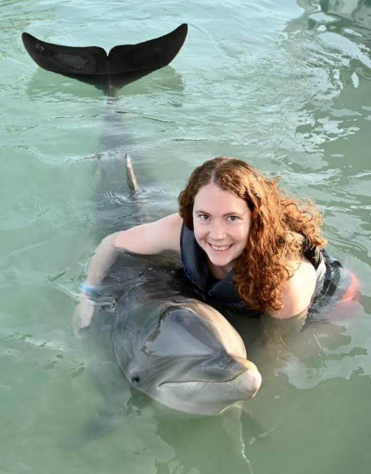

Anxiety and burnout
Support for racing thoughts, perfectionism, chronic stress, overthinking, and the exhaustion that comes from carrying too much for too long.
Therapy that feels practical, solutions-focused, and collaborative
Online therapy for adults in Pennsylvania who are navigating anxiety, ADHD, depression, burnout, or a major life transition.
Who I help
Therapy can create room to slow down, understand what is happening, and build tools that fit your real life rather than adding another impossible standard.
Support for racing thoughts, perfectionism, chronic stress, overthinking, and the exhaustion that comes from carrying too much for too long.
Practical help with attention, organization, emotional regulation, motivation, and building systems that work with your brain.
A steady place to process changes in work, school, relationships, identity, pregnancy, postpartum life, grief, or other major turning points.

Meet Erin
I am a Pennsylvania Licensed Clinical Social Worker and ADHD Certified Clinical Professional. My work is collaborative, creative, and goal-oriented, with an emphasis on helping you feel heard while also moving toward meaningful change.
I draw from approaches such as cognitive behavioral therapy, dialectical behavior therapy, acceptance and commitment therapy, internal family systems, mindfulness, and solution-focused work. We will adapt the process to your needs rather than forcing you into a single method.
What therapy can look like
“We will identify what is already working, understand what keeps getting in the way, and build realistic changes together.”
Use Headway to view current insurance options, confirm benefits, and request an appointment. You can also call or email for a free 15-minute consultation before deciding.
Book through Headway or reach out for a brief consultation. There is no pressure to commit before your questions are answered.